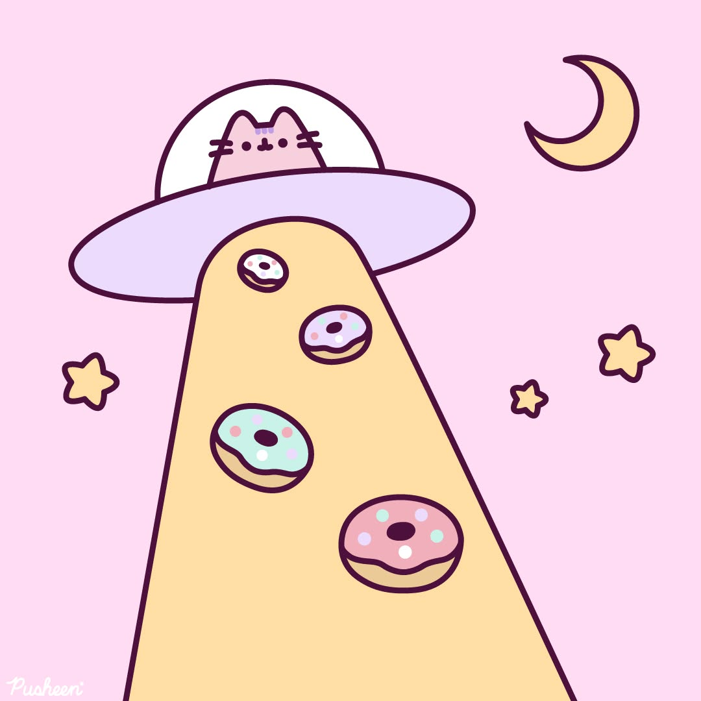
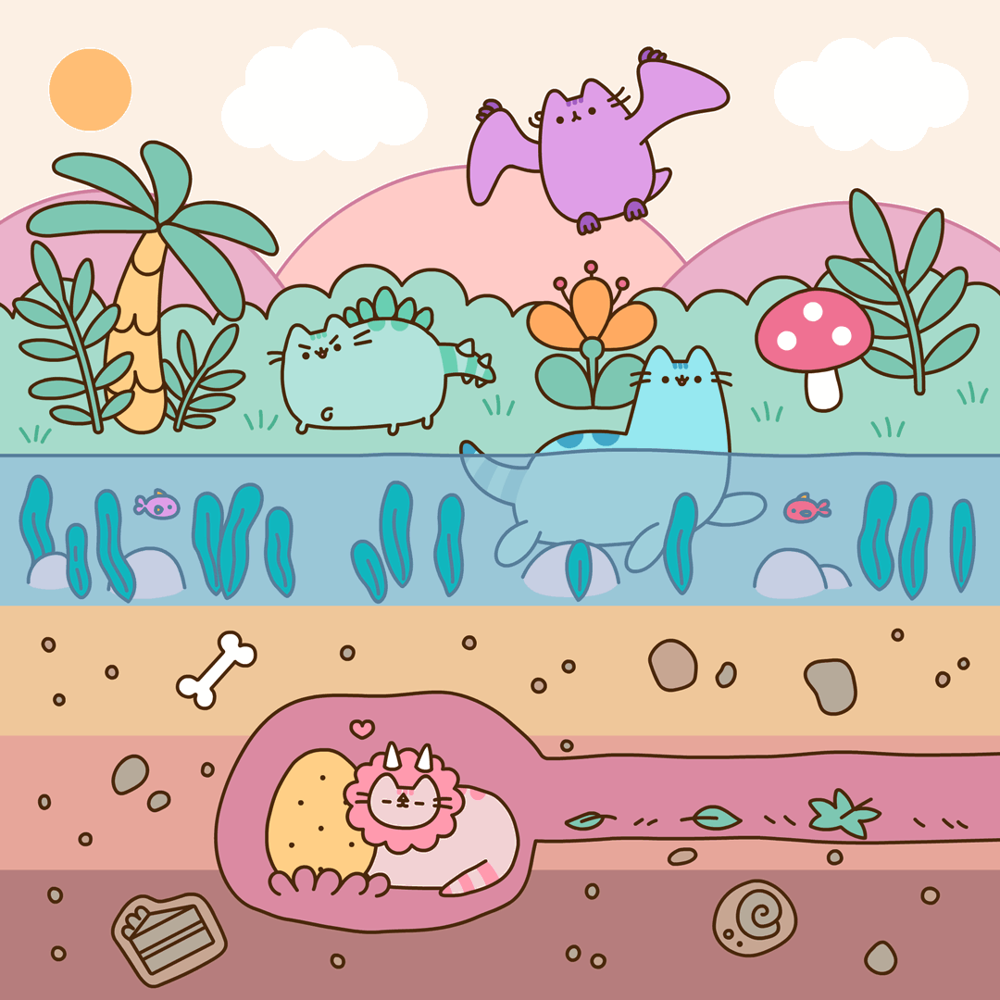

Pusheen Alien
Pusheen Alien (também conhecida como Pastel Pusheen Aliens) é uma coleção temática que apresenta a famosa gata Pusheen e seus irmãos, Stormy e Pip, em formas extraterrestres coloridas e tons pastéis.
Go somewhere
Pusheen Sereia
A Pusheen Sereia (também conhecida como "Purrmaid") é uma das versões mais populares da personagem Pusheen, apresentando a gata com uma cauda de peixe colorida e acessórios marítimos.
Go somewhere

Pusheen Dinossauro
Pusheen dinossauro, frequentemente chamada de Pusheenosaurus, é uma das transformações mais populares da famosa gata Pusheen, caracterizada por espinhos nas costas e uma cauda listrada.
Go somewhere